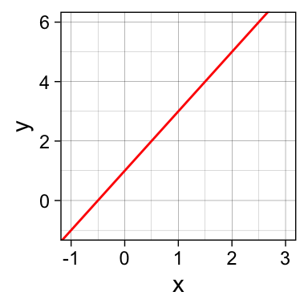

# we are reading the data directly from the internet
biochem <- read_tsv("http://mtweb.cs.ucl.ac.uk/HSMICE/PHENOTYPES/Biochemistry.txt", show_col_types = FALSE) |>
janitor::clean_names()
# simplify names a bit more
colnames(biochem) <- gsub(pattern = "biochem_", replacement = "", colnames(biochem))
# we are going to simplify this a bit and only keep some columns
keep <- colnames(biochem)[c(1, 6, 9, 14, 15, 24:28)]
biochem <- biochem[, keep]
# get weights for each individual mouse
# careful: did not come with column names
weight <- read_tsv("http://mtweb.cs.ucl.ac.uk/HSMICE/PHENOTYPES/weight", col_names = F, show_col_types = FALSE)
# add column names
colnames(weight) <- c("subject_name", "weight")
# add weight to biochem table and get rid of NAs
# rename gender to sex
b <- inner_join(biochem, weight, by = "subject_name") |>
na.omit() |>
rename(sex = gender)Stats Bootcamp - class 13
Hypothesis testing
Neelanjan Mukherjee
RNA Bioscience Initiative | CU Anschutz
2023-09-14
Prepare mouse biochem data
Learning objectives
- Formulate and Execute null hypothesis testing
- Identify and Perform the proper statistical test for data type/comparison
- Calculate and Interpret p-values
Parametric vs Nonparametric tests
Parametric tests are suitable for normally distributed data.
Nonparametric tests are suitable for any continuous data. Though these tests have their own sets of assumption, you can think of Nonparametric tests as the ranked versions of the corresponding parametric tests.
More on choosing Parametric vs Non-Parametric
| Info | Parametric | Nonparametric |
|---|---|---|
| better descriptor | mean | median |
| # of samples (N) | many | few |
Random variables
Response Variable ( y - aka dependent or outcome variable): this variable is predicted or its variation is explained by the explanatory variable. In an experiment, this is the outcome that is measured following manipulation of the explanatory variable.
Explanatory Variable ( x - aka independent or predictor variable): explains variations in the response variable. In an experiment, it is manipulated by the researcher.
Appropriate statistical test cheatsheet

Relationship between 2 or more quantitative variables?
Correlation: summarize the direction and strength of the relationships between 2 or more variables.
Regression: build model/formula to predict a response, \(y\), from one or more explanatory variable \(x\).
Association between two continuous variables (x and y)
\(y\) is independent of \(x\)
\(y\) is continuous
\(x\) is continuous
Parametric: Pearson correlation
cor_test(x, y, method="Pearson")
Nonparametric: Spearman correlation (ranked values)
cor_test(x, y, method="Spearman")
- Declare null hypothesis \(\mathcal{H}_0\)
- Calculate test-statistic, exact p-value
Correlation vs Regression
| Correlation | Regression | |
|---|---|---|
| Description | Association between 2 or more variables | How an response variable is numerically related to explanatory variable(s) |
| Usage | To represent linear relationship between two variables | To fit a best line and estimate one variable on the basis of another variable |
| Response vs Explanatory variables | Doesn’t matter | must define (i.e. order of relationship matters) |
| Interpretation | Correlation coefficient indicates direction and extent to which two variables move together | Regression indicates the impact of a unit change in the explanatory variable (x) on the response variable (y) |
| Goal | To find a numerical value expressing the relationship between variables | To estimate values of response variable on the basis of the values of explanatory variable(s) |
Null hypothesis testing
- Examine and specify the variable(s)
- Declare null hypothesis \(\mathcal{H}_0\)
- Calculate test-statistic, exact p-value
We will not stick to this super closely for correlation, but will for regression.
Pearson correlation
It was developed by Karl Pearson from a related idea introduced by Francis Galton in the 1880s, and for which the mathematical formula was derived and published by Auguste Bravais in 1844.[a][6][7][8][9] The naming of the coefficient is thus an example of Stigler’s Law (see list of examples here).
Interpretation of coefficient:
1 = perfect linear correlation
0 = no correlation
-1 = perfect linear anti-correlation
\(Corr(x,y) = \displaystyle \frac {\sum_{i=1}^{n} (x_{i} - \overline{x})(y_{i} - \overline{y})}{\sum_{i=1}^{n} \sqrt(x_{i} - \overline{x})^2 \sqrt(y_{i} - \overline{y})^2}\)
\(x_{i}\) = the “i-th” observation of the variable \(x\)
\(\overline{x}\) = mean of all observations of \(x\)
\(y_{i}\) = the “i-th” observation of the variable \(y\)
\(\overline{y}\) = mean of all observations of \(y\)
Association between mouse \(weight\) and \(tot\_cholesterol\)

we previously established these are normal enough > \(\mathcal{H}_0\) is no (linear) relationship between \(tot\_cholesterol\) and \(weight\)
# A tibble: 1 × 8
var1 var2 cor statistic p conf.low conf.high method
<chr> <chr> <dbl> <dbl> <dbl> <dbl> <dbl> <chr>
1 weight tot_cholesterol 0.35 16.0 8.92e-54 0.313 0.394 PearsonP value well below 0.05
\(\mathcal{H}_0\) is no relationship between \(tot\_cholesterol\) and \(weight\) NOT WELL SUPPORTED
So there is a (linear) relationship between \(tot\_cholesterol\) and \(weight\)
Visualize Pearson correlation
Visualize Pearson correlation

Manual calculation of Pearson correlation
\(Corr(x,y) = \displaystyle \frac {\sum_{i=1}^{n} (x_{i} - \overline{x})(y_{i} - \overline{y})}{\sum_{i=1}^{n} \sqrt(x_{i} - \overline{x})^2 \sqrt(y_{i} - \overline{y})^2}\)
# mean total cholesterol
m_chol <- mean(b$tot_cholesterol)
# average weight
m_weight <- mean(b$weight)
# difference from mean total cholesterol
diff_chol <- b$tot_cholesterol - m_chol
# difference from mean total cholesterol
diff_weight <- b$weight - m_weight
# follow formula above
manual_pearson <- sum(diff_chol * diff_weight) / (
sqrt(sum(diff_chol^2)) * sqrt(sum(diff_weight^2)))
manual_pearsonManual calculation of Pearson correlation
[1] 0.3540731Spearman Correlation (nonparametric)
Spearman’s rank correlation coefficientor Spearman’s ρ, named after Charles Spearman is a nonparametric measure of rank correlation (statistical dependence between the rankings of two variables). It assesses how well the relationship between two variables can be described using a monotonic function.
More info here.
# A tibble: 1 × 6
var1 var2 cor statistic p method
<chr> <chr> <dbl> <dbl> <dbl> <chr>
1 weight tot_cholesterol 0.36 603954134. 1.54e-55 SpearmanP value well below 0.05
\(\mathcal{H}_0\) is no relationship between \(tot\_cholesterol\) and \(weight\) NOT WELL SUPPORTED
Visualize Spearman correlation
Visualize Spearman correlation

Let’s create a hypothetical example
create tibble \(d\) with variables \(x\) and \(y\)
\(x\), 1:50
\(y\), which is \(x^{10}\)

Pearson
Additional examples with correlation
compare 1 variable to all other quantitative variables
| var1 | var2 | cor | statistic | p | method |
|---|---|---|---|---|---|
| weight | calcium | 0.110 | 842963811 | 7.02e-06 | Spearman |
| weight | glucose | 0.120 | 826420593 | 1.60e-07 | Spearman |
| weight | sodium | 0.190 | 761019970 | 1.99e-16 | Spearman |
| weight | tot_cholesterol | 0.360 | 603954134 | 1.54e-55 | Spearman |
| weight | age | 0.150 | 798746789 | 8.23e-11 | Spearman |
| weight | cage_density | -0.100 | 1039415036 | 1.58e-05 | Spearman |
| weight | litter | -0.035 | 976251231 | 1.38e-01 | Spearman |
relationship between \(weight\) and \(tot\_cholesterol\) by \(sex\)
Appropriate statistical test cheatsheet
Regression
We are going to change our frame work to learn about regression. The nice thing is that everything we learn for regression is applicable to all the tests we just learned.
The simplicity underlying common tests
Most of the common statistical models (t-test, correlation, ANOVA; etc.) are special cases of linear models or a very close approximation. This simplicity means that there is less to learn. It all comes down to:
\(y = a \cdot x + b\)
This needless complexity multiplies when students try to rote learn the parametric assumptions underlying each test separately rather than deducing them from the linear model.
Equation for a line
Remember:
\(y = a \cdot x + b\)
OR
\(y = b + a \cdot x\)
\(a\) is the SLOPE (2) \(b\) is the y-intercept (1)

Stats equation for a line
Model:
\(y\) equals the intercept (\(\beta_0\)) pluss a slope (\(\beta_1\)) times \(x\).
\(y = \beta_0 + \beta_1 x \qquad \qquad \mathcal{H}_0: \beta_1 = 0\)
… which is the same as \(y = b + a \cdot x\).
The short hand for this in R: y ~ 1 + x
R interprets this as:
y = 1*number + x*othernumber
The task of t-tests, lm, etc., is simply to find the numbers that best predict \(y\).
Stats equation for a line
All you need is an intercept (\(\beta_0\)) and a slope (\(\beta_1\)) to get a line:

\(\beta_0\) = 1 (the y-intercept), \(\beta_1\) = 2 (the slope)
\(y = \beta_0 \cdot 1 + \beta_1 \cdot x\)
\(y = 1 \cdot 1 + 2 \cdot x\)
\(y = 1 + 2x\)
Our mission: FIND THE BEST \(\beta\) coefficients
Linear Regression
- STEP 1: Make a scatter plot visualize the linear relationship between x and y.
- STEP 2: Perform the regression
- STEP 3: Look at the \(R^2\), \(F\)-value and \(p\)-value
- STEP 4: Visualize fit and errors
- STEP 5: Calculate \(R^2\), \(F\)-value and \(p\)-value ourselves
STEP 1: Can mouse cholesterol levels explain mouse weight?
Plot \(weight\) (y, response variable) and \(tot_cholesterol\) (x, explanatory variable)
STEP 2: Do the regression
Keep calm and fit a line! Remember: \(y = \beta_0 \cdot 1+ \beta_1 \cdot x\)
linear model equation: \(weight = \beta_0 \cdot 1 + \beta_1 \cdot tot\_cholesterol\)
\(\mathcal{H}_0:\) \(tot\_cholesterol\) does NOT explain \(weight\) Null Hypothesis: \(\mathcal{H}_0: \beta_1 = 0\)
\(weight = \beta_0 \cdot 1 + 0 \cdot tot\_cholesterol\) \(weight = \beta_0 \cdot 1\)
\(\mathcal{H}_1:\) Mouse \(tot\_cholesterol\) does explain \(weight\)
\(weight = \beta_0 \cdot 1 + \beta_1 \cdot tot\_cholesterol\)
The cool thing here is that we can assess and compare our null and alternative hypothesis by learning and examining the model coefficients (namely the slope). Ultimately, we are comparing a complex model (with cholesterol) to a simple model (without cholesterol).
https://statisticsbyjim.com/regression/interpret-constant-y-intercept-regression/
STEP 4: Look at the \(R^2\), \(F\)-value and \(p\)-value
Call:
lm(formula = weight ~ 1 + tot_cholesterol, data = b)
Residuals:
Min 1Q Median 3Q Max
-8.9624 -2.1349 -0.2627 2.0113 10.2927
Coefficients:
Estimate Std. Error t value Pr(>|t|)
(Intercept) 14.5560 0.3635 40.04 <2e-16 ***
tot_cholesterol 1.8516 0.1159 15.97 <2e-16 ***
---
Signif. codes: 0 '***' 0.001 '**' 0.01 '*' 0.05 '.' 0.1 ' ' 1
Residual standard error: 3.121 on 1780 degrees of freedom
Multiple R-squared: 0.1254, Adjusted R-squared: 0.1249
F-statistic: 255.1 on 1 and 1780 DF, p-value: < 2.2e-16That’s a lot of info, but how would I access it? Time to meet your new best friend:
Tidying output
information about the model fit
| r.squared | adj.r.squared | sigma | statistic | p.value | df | logLik | AIC | BIC | deviance | df.residual | nobs |
|---|---|---|---|---|---|---|---|---|---|---|---|
| 0.125 | 0.125 | 3.121 | 255.141 | 8.924155e-54 | 1 | -4555.615 | 9117.229 | 9133.686 | 17335.95 | 1780 | 1782 |
information about the intercept and coefficients
| term | estimate | std.error | statistic | p.value |
|---|---|---|---|---|
| (Intercept) | 14.556 | 0.363 | 40.044 | 1.482991e-250 |
| tot_cholesterol | 1.852 | 0.116 | 15.973 | 8.924155e-54 |
save the intercept and slope into variable to use later
for every 1 unit increase in cholesterol there is a 1.85 unit increase weight
Collecting residuals and other information
add residuals and other information
# A tibble: 1,782 × 17
subject_name calcium glucose sodium tot_cholesterol family sex age
<chr> <dbl> <dbl> <dbl> <dbl> <chr> <chr> <dbl>
1 A048005080 1.97 12.2 123 3.01 H2.3:C5.2(3)… F 66
2 A048005112 2.11 11.0 133 2.46 H2.2:C3.1(4)… F 70
3 A048006555 1.71 5.97 119 3.57 E1.3:H1.2(3)… M 72
4 A048007096 2.49 10.6 148 2.61 D3.2:G2.1(5)… M 66
5 A048010273 2.14 11.9 131 2.04 G5.2:B5.1(4)… F 63
6 A048010371 2.16 10.6 134 2.86 H4.2:C5.1(4)… M 72
7 A048011287 2.29 9.62 146 3.22 B4.3:E5.2(3)… M 66
8 A048011554 1.69 9.82 117 3.47 H2.3:C5.2(3)… F 72
9 A048012562 1.84 11.0 121 3.35 A4.2:D2.1(4)… M 64
10 A048013559 2.31 4.96 144 2.29 C5.2:F3.1(5)… F 66
# ℹ 1,772 more rows
# ℹ 9 more variables: cage_density <dbl>, litter <dbl>, weight <dbl>,
# .fitted <dbl>, .resid <dbl>, .hat <dbl>, .sigma <dbl>, .cooksd <dbl>,
# .std.resid <dbl>What are Residuals
Residuals, \(e\) — the difference between the observed value of the response variable \(y\) and the explanatory value \(\widehat{y}\) is called the residual. Each data point has one residual. Specifically, it is the distance on the y-axis between the observed \(y_{i}\) and the fit line.
\(e = y_{i} - \widehat{y}\)
Residuals with large absolute values indicate the data point is NOT well explained by the model.
STEP 5: Visualize fit and errors
Visualize the residuals OR the error around the fit

Visualize the total error OR the error around the null. So no cholesterol fit, just the mean of y.
STEP 6: Calculate \(R^2\), \(F\)-value, \(p\)-value ourselves
What is \(R^2\)
\(R^2\) — the coefficient of determination, which is the proportion of the variance in the response variable that is predictable from the explanatory variable(s).
\(R^2 = 1 - \displaystyle \frac {SS_{fit}}{SS_{null}}\)
\(SS_{fit}\) — sum of squared errors around the least-squares fit
\(SS_{fit} = \sum_{i=1}^{n} (data - line)^2 = \sum_{i=1}^{n} (y_{i} - (\beta_0 \cdot 1+ \beta_1 \cdot x)^2\)
\(SS_{null}\) — sum of squared errors around the mean of \(y\)
\(SS_{null} = \sum_{i=1}^{n} (data - mean)^2 = \sum_{i=1}^{n} (y_{i} - \overline{y})^2\)
Calculate \(R^2\)
\(SS_{fit}\) — sum of squared errors around the least-squares fit
\(SS_{null}\) — sum of squared errors around the mean of \(y\)
\(R^2 = 1 - \displaystyle \frac {SS_{fit}}{SS_{null}}\)
# A tibble: 1 × 1
r.squared
<dbl>
1 0.125BTW this is the same \(R\) as from the Pearson correlation, just squared:
cor
0.12 Interpret \(R^2\)
There is a 13% reduction in the variance when we take mouse \(cholesterol\) into account
OR
\(cholesterol\) explains 13% of variation in mouse \(weight\)
What is the F-statistic
F-statistic — based on the ratio of two variances: the explained variance (due to the model) and the unexplained variance (residuals).
\(F = \displaystyle \frac{SS_{fit}/(p_{fit}-p_{null})} {SS_{null}/(n-p_{fit})}\)
\(p_{fit}\) — number of parameters (coefficients) in the fit line
\(p_{null}\) — number of parameters (coefficients) in the mean line
\(n\) — number of data points
Calculate the F-statistic
\(F = \displaystyle \frac{SS_{null} - SS_{fit}/(p_{fit}-p_{null})} {SS_{fit}/(n-p_{fit})}\)
P-values
You don’t really need to know what the \(F-statistic\) is unless you want to calculate the p-value. In this case we need to generate a null distribution of \(F-statistic\) values to compare to our observed \(F-statistic\).
Therefore, we will randomize the \(tot_cholesterol\) and \(weight\) and then calculate the \(F-statistic\).

We will do this many many times to generate a null distribution of \(F-statistic\)s.
The p-value will be the probability of obtaining an \(F-statistic\) in the null distribution at least as extreme as our observed \(F-statistic\).
Let’s get started
# set up an empty tibble to hold our null distribution
fake_biochem <- tribble()
# we will perform 100 permutations
myPerms <- 100
for (i in 1:myPerms) {
tmp <- bind_cols(
b_WvC[sample(nrow(b_WvC)), "weight"],
b_WvC[sample(nrow(b_WvC)), "tot_cholesterol"],
"perm" = factor(rep(i, nrow(b_WvC)))
)
fake_biochem <- bind_rows(fake_biochem, tmp)
rm(tmp)
}
# let's look at permutations 1 and 2
ggplot(fake_biochem |> filter(perm %in% c(1:2)), aes(x = weight, y = tot_cholesterol, color = perm)) +
geom_point(size = .1) +
theme_minimal()Let’s get started

Run 100 linear models!
Now we will calculate and extract linear model results for each permutation individually using nest, mutate, and map functions
Visualize the null
Let’s take a look at the null distribution of F-statistics from the randomized values
remember that the \(F-statistic\) we observed was ~255!
In our 100 randoized simulations, we never see an F-statistic as extreme as the one we observed in the actual data. Therefore:
P < 0.01 or 1/100
Reminder, our calculate P value was:

How to find the best (least squares) fit?
- Rotate the line of fit
- Find the fit that minimizes the Sum of Squared Residuals or \(SS_{fit}\)
- This is the derivative (slope of tangent at best point = 0) of the function describing the \(SS_{fit}\) and the next rotation is 0.
References
Differences between correlation and regression
also more differences between correlation and regression.
Common statistical tests are linear models from Jonas Lindeløv
Linear Regression Assumptions and Diagnostics in R: Essentials
PRINCIPLES OF STATISTICS from GraphPad/SAS.
Statquest: how to go from F-statistic to p-value
StatQuest: Fitting a line to data, aka least squares, aka linear regression.
StatQuest: Gradient Descent, Step-by-Step
Course website: https://rnabioco.github.io/molb-7950